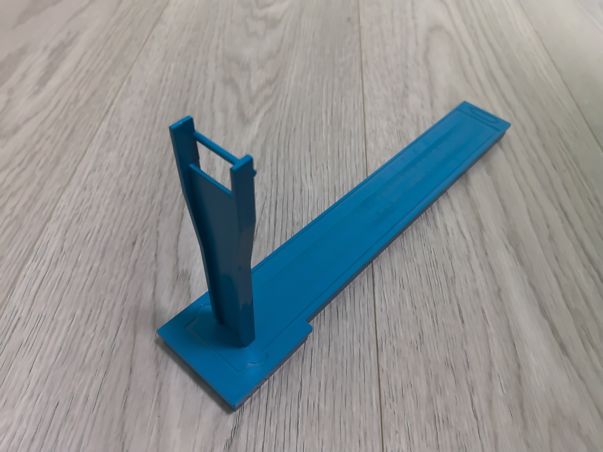

Autumn
Nowadays, people seem to have lost touch with the changing seasons.To help us reconnect with nature, we can turn to an ancient Chinese tool called the Gnomon .

"In today's busy cities, finding a connection with nature often feels like a challenge. Yet, the ancient Chinese poet Tao Yuanming taught us that true peace comes from within. As he wrote,[...]
Nowadays, people seem to have lost touch with the changing seasons.To help us reconnect with nature, we can turn to an ancient Chinese tool called the Gnomon .
